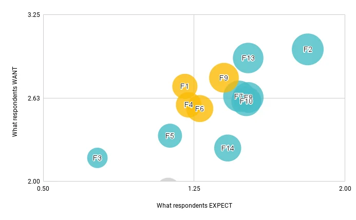
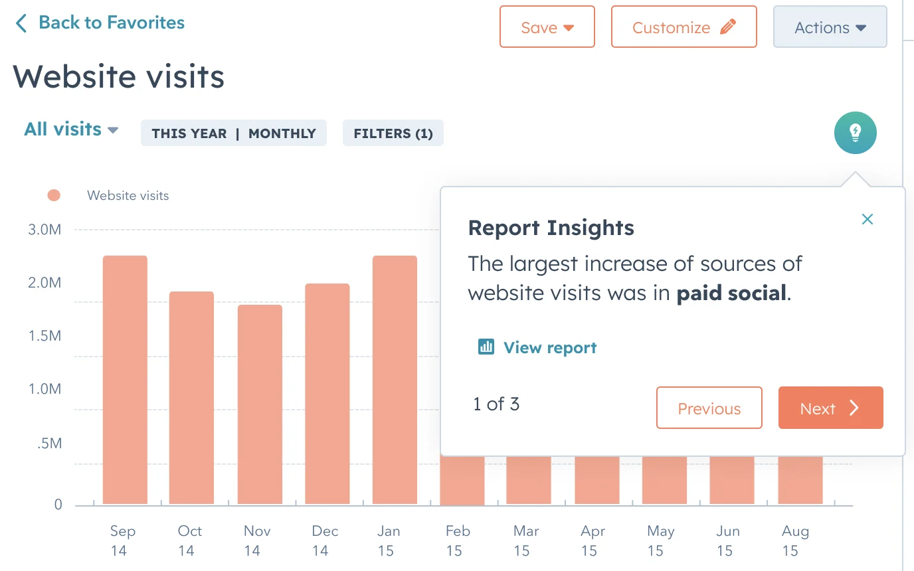
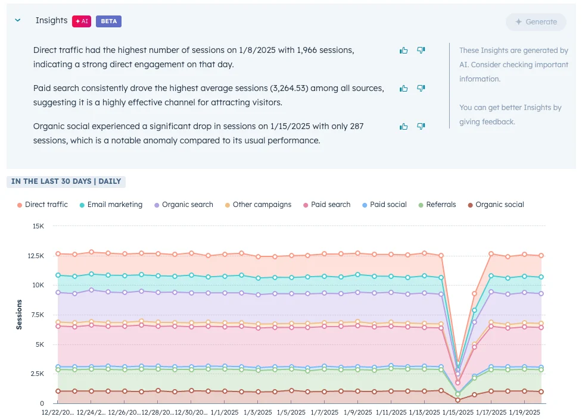

More data didn't mean better decisions.
Reporting kept adding data and features, but users still struggled to work out what was meaningful and what to do about it.
"Is this data or information? What is meaningful, how do I make something meaningful…"
Marketing director, HubSpot customer
Two kinds of users, one gap
Know the business but not their data. They need to know what's meaningful so they can act on it.
"It's hard to pull meaningful information from the dashboard."
Spend more time with data and need to explain why it matters to decision makers.
"I have to send along video or a text box and I'm like why is this so much work?"
Curate, don't dump: do what a good analyst would.
Condense complex information
Turn a noisy report into a few plain-language sentences.
Point to what's salient
Call out the one change that matters among many.
Link information across reports
Show how one finding relates to the rest of the business.
I moved from customer touchpoints to lo-fi concepts, tested with a small set of customers, then validated at scale. Early users wanted insights that were natural-language, automatic, easy to configure, connected to the rest of reporting, and paired with visuals.
14 features, 105 users, and one surprising answer.
We had many possible directions, so I ran a Kano survey testing 14 features with 105 users to learn what they expected, what would delight them, and what they didn't want.

Advanced breakdowns
Users expect more advanced breakdowns and groupings of their reports.
Beyond the chart
Users want information that goes beyond their own reading of a chart.
Insight, not instructions
None of the features that suggested actions or resources were desirable.
Design decisionThat last finding shaped the product. AI Insights curates and explains, and it leaves the decision to the user.
Ship the slice with existing models, then iterate.
- One report at a time
- Summary text from HubSpot's generative AI wrapper
- Insights beside the chart they describe
- Chat interface
- Customization
- Generated visuals
- Modularity
Iterating on the experience
The first design showed insights in a modal. It caused technical issues, and in testing users preferred seeing all insights at once, next to the chart they described.


"This is exactly what I would be looking for… just, really quick, interesting insights that I can share out."
Usability test participant
HubSpot's first AI product, and the path for the ones after it.
AI Insights was activated by 185k users, and average monthly usage rose 25% after activation. It paved the way for fast follows: forecasting, anomaly detection and generated report descriptions. Those display options were adopted by more than 100k users and improved two-week retention by 30%.
What I learned
The quality of an insight depends as much on the prompt and its framing as on the UI around it.
The Kano survey kept us from building recommendations users didn't want.
Next steps were linking insights to drill-throughs and an AI assistant.